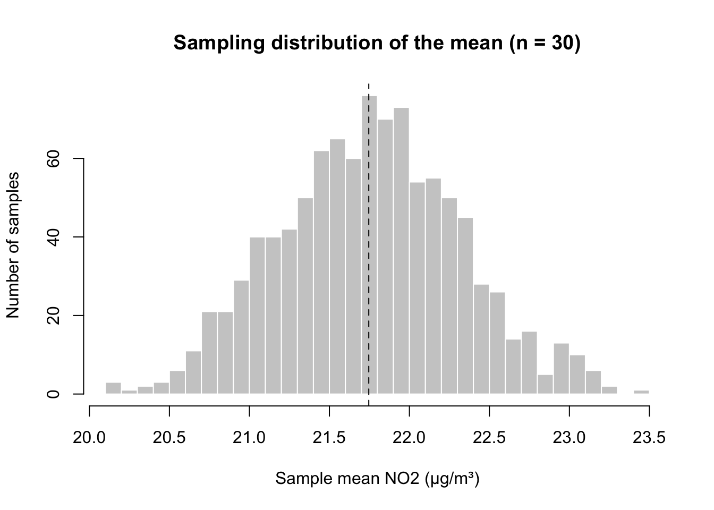
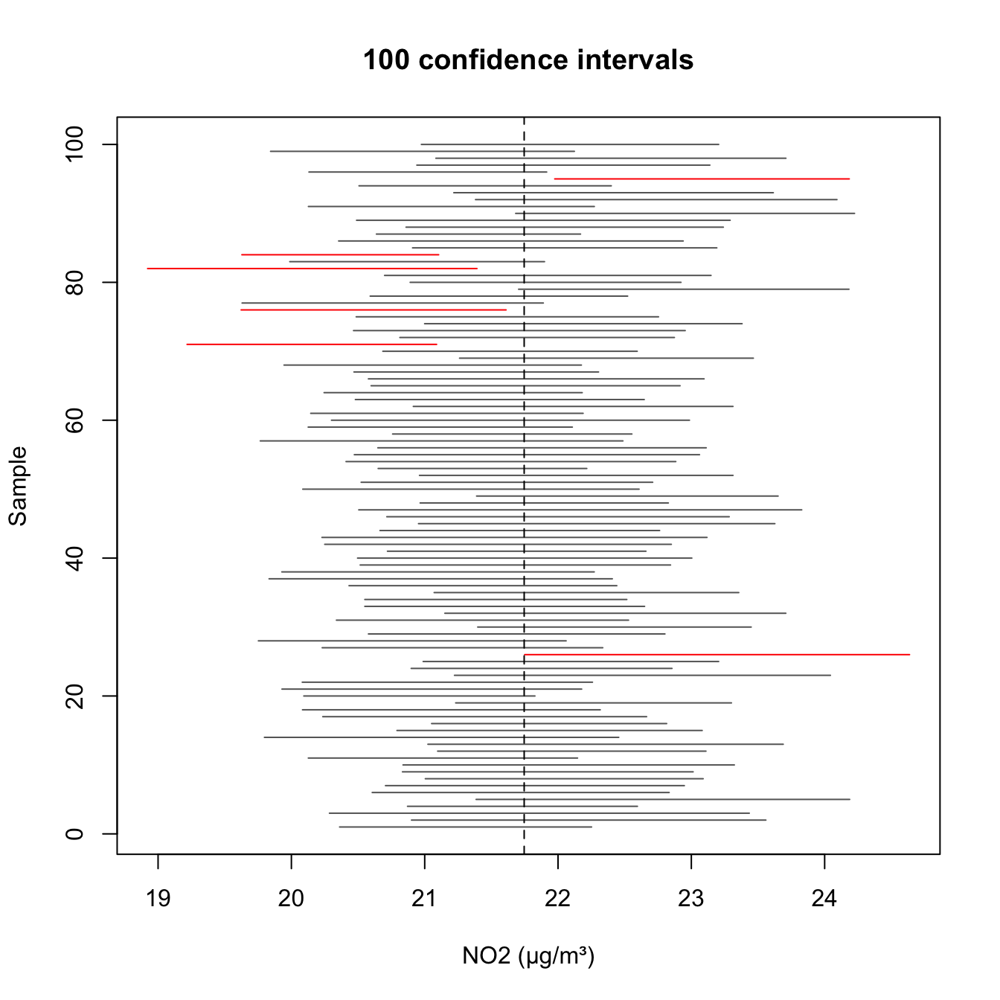

R code
# load the tidyverse and the data
library(tidyverse)
lsoa <- read_csv('data/london-lsoa-air-quality.csv')
# the population mean: normally unknown!
true_mean <- mean(lsoa$no2)
true_mean[1] 21.74612Last week, we described NO2 levels for all 4,994 LSOAs in London. In practice, however, we hardly ever have data for everything. Air pollution is only measured at a few hundred monitoring sites across London, and the values in our dataset come from a model that fills in the gaps. Similarly, surveys ask a few thousand people rather than the whole country. The question we usually face is therefore: if we only have a sample, how close are we to the truth, and how sure can we be?
This week, we can answer that question precisely, because for once we know the truth. We will treat our full dataset as the population, draw samples from it, and see how well these samples do.
Open the GEOG0187-stats project you created in Session 5 and create a new script called w06-uncertainty.R.
Before we start, it is important to distinguish between two terms:
We use statistics to estimate parameters. Let us start by loading the data and storing the true mean, which in real research we would not know:
R code
# load the tidyverse and the data
library(tidyverse)
lsoa <- read_csv('data/london-lsoa-air-quality.csv')
# the population mean: normally unknown!
true_mean <- mean(lsoa$no2)
true_mean[1] 21.74612Suppose we can afford air quality monitors in 30 LSOAs, selected at random. We can use slice_sample() to pick 30 random rows from our dataset. Because the selection is random, we first fix R’s random number generator with set.seed(). This makes sure that we get the same sample every time we run the script:
R code
# fix the random numbers (try your own number too)
set.seed(48)
# a random sample of 30 LSOAs
my_sample <- lsoa |>
slice_sample(n = 30)
# the sample mean: our estimate of the true mean
mean(my_sample$no2)[1] 21.30667Our estimate is close to the true mean, but not exactly the same. Now change 48 to any other number, run the lines again, and compare your result with your neighbour’s: everyone will get a slightly different estimate. This variation from one sample to the next is called sampling variability, and it is what the rest of this session is about.
What happens if we repeat the whole exercise 1,000 times? We can do this with replicate(), which runs a piece of code many times and collects the results. Here we use base R’s sample() function, which draws random values from a single column:
R code
# 1,000 samples of 30 LSOAs, keeping the mean of each
set.seed(48)
sample_means <- replicate(1000, mean(sample(lsoa$no2, 30)))
# the first few sample means
head(sample_means)[1] 21.30667 22.23000 21.86000 21.73333 22.78667 21.72000The distribution of all these sample means is called the sampling distribution.
Predict first: where do you expect the 1,000 sample means to be centred, and will they be more or less spread out than the NO2 values of individual LSOAs in last week’s histogram? Now plot them, together with the true mean:
R code
hist(sample_means, breaks = 30,
main = 'Sampling distribution of the mean (n = 30)',
xlab = 'Sample mean NO2 (µg/m³)', ylab = 'Number of samples',
col = 'grey80', border = 'white')
abline(v = true_mean, lty = 2)
There are three things to notice here:
The spread of the sampling distribution tells us how far a typical sample mean is from the true mean. The standard deviation of the sampling distribution has its own name: the standard error (SE).
R code
# standard error: the sd of the sample means
sd(sample_means)[1] 0.567464In real research, we cannot draw 1,000 samples: we only have one. Fortunately, we can estimate the standard error from that single sample:
\[ SE = \frac{s}{\sqrt{n}} \]
where \(s\) is the standard deviation in the sample and \(n\) is the sample size. Let us apply this to our sample:
R code
# standard error estimated from one sample
sd(my_sample$no2) / sqrt(30)[1] 0.4820915The two values are close, which means that a single sample is enough to tell us roughly how precise our estimate is.
Be careful not to confuse the standard deviation with the standard error. The standard deviation describes how much LSOAs differ from each other. The standard error describes how much a sample mean would vary from one sample to the next. Collecting more data does not make LSOAs more alike, but it does make our estimate of their mean more precise.
How does the standard error change with the size of the sample? We can find out by repeating our simulation for samples of 10, 30, 100 and 300 LSOAs.
Predict first: a sample of 300 LSOAs is ten times larger than a sample of 30. Do you expect its standard error to be ten times smaller?
R code
# simulated standard error for different sample sizes
set.seed(48)
sizes <- tibble(n = c(10, 30, 100, 300)) |>
rowwise() |>
mutate(se = sd(replicate(1000, mean(sample(lsoa$no2, n))))) |>
ungroup()
sizes# A tibble: 4 × 2
n se
<dbl> <dbl>
1 10 1.02
2 30 0.592
3 100 0.328
4 300 0.186The standard error becomes smaller as the sample gets larger, but only slowly: we need four times as many LSOAs to halve the standard error. This is the effect of the \(\sqrt{n}\) in the formula, and it is why precision is expensive.
A sample mean on its own hides how uncertain it is. A confidence interval (CI) makes this uncertainty visible. Because the sampling distribution is bell-shaped, about 95% of sample means fall within 1.96 standard errors of the true mean. Turning this around, we can calculate a 95% confidence interval as:
\[ \bar{x} \pm 1.96 \times SE \]
R code
# 95% confidence interval from our one sample
m <- mean(my_sample$no2)
se <- sd(my_sample$no2) / sqrt(30)
c(lower = m - 1.96 * se, upper = m + 1.96 * se) lower upper
20.36177 22.25157 R can also calculate this for us with the t.test() function. This uses a slightly larger multiplier than 1.96, taken from the t distribution, to allow for the fact that \(s\) is itself estimated from a small sample. As a result, the interval is a little wider:
R code
# the same, from t.test()
t.test(my_sample$no2)$conf.int[1] 20.32068 22.29265
attr(,"conf.level")
[1] 0.95The 95% does not mean that there is a 95% chance that the true mean lies within your interval: the true mean is fixed, and your interval either contains it or it does not. Instead, it means that the method captures the true mean in 95% of samples. Because we know the true mean, we can check this. Let us draw 100 samples, calculate a confidence interval for each of them, and count how many contain the true mean. Before you run the code, write down how many you expect:
R code
# 100 samples, a 95% CI for each
set.seed(48)
ci_sim <- tibble(sample_id = 1:100) |>
rowwise() |>
mutate(values = list(sample(lsoa$no2, 30)),
mean = mean(values),
se = sd(values) / sqrt(30),
lower = mean - 1.96 * se,
upper = mean + 1.96 * se) |>
ungroup() |>
mutate(hit = lower <= true_mean & upper >= true_mean)
# how many intervals contain the true mean?
sum(ci_sim$hit)[1] 94We can also plot all 100 intervals:
R code
# plot the intervals: grey = contains the true mean, red = misses
plot(NULL, xlim = range(ci_sim$lower, ci_sim$upper), ylim = c(1, 100),
main = '100 confidence intervals',
xlab = 'NO2 (µg/m³)', ylab = 'Sample')
segments(ci_sim$lower, ci_sim$sample_id, ci_sim$upper, ci_sim$sample_id,
col = ifelse(ci_sim$hit, 'grey40', 'red'))
abline(v = true_mean, lty = 2)
Roughly 95 out of 100 intervals contain the true mean. In real research, however, we never know whether our interval is one of the unlucky ones.
So far, we have assumed that our sample is random. Suppose instead that all monitors were placed in Inner London, for instance because that is where pollution is expected to be highest:
R code
# a sample of 30 LSOAs from Inner London only
set.seed(48)
inner_sample <- lsoa |>
filter(inner_outer == 'Inner') |>
slice_sample(n = 30)
# 95% CI from this sample, and the true London mean
t.test(inner_sample$no2)$conf.int[1] 24.41852 26.87481
attr(,"conf.level")
[1] 0.95true_mean[1] 21.74612The interval looks just as precise as before, but it is in the wrong place. Taking a larger sample from Inner London would make the interval narrower, but it would still be wrong. Confidence intervals capture random error (sampling variability), but not bias: systematic error caused by how the data were collected. This is why the question of how a sample was selected should always come before any calculation.
Now change 'Inner' to 'Outer' in the code above. Before you run it, predict whether the interval will be too high or too low, and then check.
Think back to your fieldwork. Were your survey sites a random sample of the area? What would a confidence interval based on these sites tell you, and what would it not tell you?
When you report an estimate based on a sample, for instance in an essay or a worksheet, you should report its uncertainty alongside it, explain how the sample was drawn, and interpret the interval in plain words. Based on this session’s sample, this could look as follows:
In a random sample of 30 London LSOAs, mean annual NO2 was 21.3 µg/m³ (95% CI 20.3 to 22.3 µg/m³). Values for London as a whole between these two numbers are consistent with our sample.
Avoid writing that there is a “95% probability” that the true mean lies in your interval (see What does 95% mean?).
Now try the same for PM2.5: draw a random sample of 30 LSOAs, report the mean with its 95% confidence interval, and check whether your interval contains the true mean.
| Problem | What to try |
|---|---|
| My numbers differ from the page | Check that you ran set.seed(48) directly before the line that draws the sample. Any other seed gives different, equally valid, numbers. |
object 'true_mean' not found |
Run your script from the top: later lines depend on earlier ones. |
| The simulation takes a while | 1,000 repetitions takes a second or two. If it hangs, use Session → Interrupt R and check for typos. |
Error in sample.int(...): cannot take a sample larger than the population |
You asked for more values than there are rows, e.g. in a filtered dataset. Use a smaller n. |